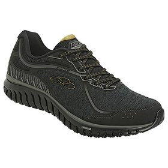

Tênis Olympikus Attract
O Tênis Olympikus Attract Se 815 Masculino é confeccionado em material sintético com detalhes em material têxtil, garantindo maior conforto e respirabilidade, a estrutura é firme e possui perfuros para circulação de ar.

Tênis Nike Downshifter
O modelo apresenta cabedal em malha de tramas abertas que auxiliam na flexibilidade e na ventilação interna, que afasta o mau odor. A palmilha macia fornece conforto durante as passadas, enquanto o solado emborrachado garante aderência e tração.

Tênis Olympikus Marine
O Tênis Olympikus Attract Se 815 Masculino é confeccionado em material sintético com detalhes em material têxtil, garantindo maior conforto e respirabilidade, a estrutura é firme e possui perfuros para circulação de ar.